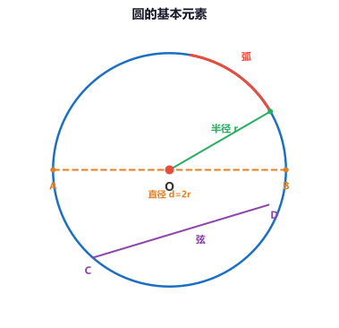
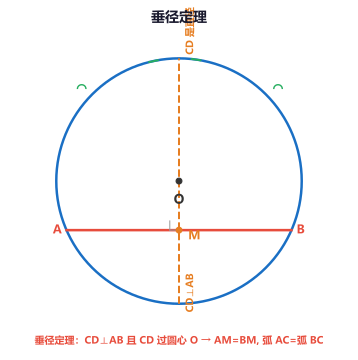
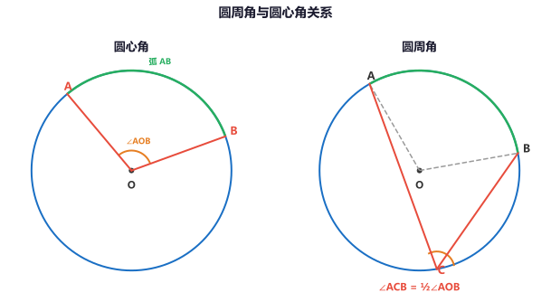
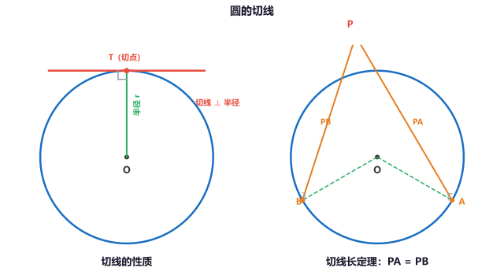
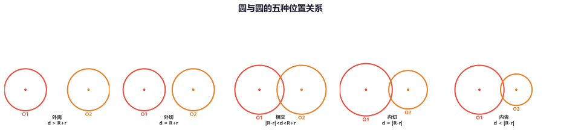
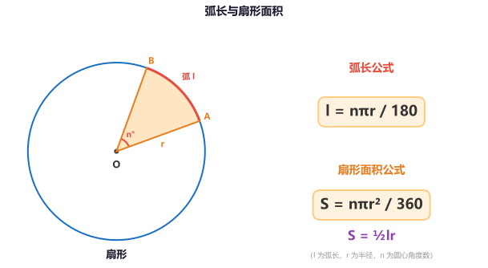
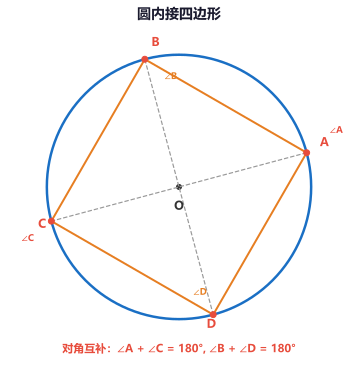

专题一：圆的基本概念与性质
圆心 · 半径 · 直径 · 弦 · 弧
圆的定义：在平面内，到定点（圆心 O）的距离等于定长（半径 r）的点的集合叫做圆。以O为圆心的圆记作⊙O，读作"圆O"。
与圆有关的概念：
• 弦：连接圆上任意两点的线段叫做弦。经过圆心的弦叫做直径，直径是圆中最长的弦，d = 2r。
• 弧：圆上任意两点间的部分叫做圆弧，简称弧。大于半圆的弧叫优弧，小于半圆的弧叫劣弧。
• 圆心角：顶点在圆心的角叫做圆心角，∠AOB 是弧AB所对的圆心角。
• 同心圆：圆心相同、半径不同的圆。等圆：半径相等的圆（圆心可以不同）。
圆的性质：
• 圆是轴对称图形，任意一条直径所在的直线都是它的对称轴（有无数条对称轴）。
• 圆是中心对称图形，圆心是它的对称中心。
• 同圆或等圆的半径相等。

圆的基本元素：圆心 O、半径 r、直径 AB、弦 CD、弧
例题1：已知⊙O的半径为5cm，求：(1) 直径的长度。(2) 圆中最长的弦的长度。点击显示解析
解析：
(1) 直径 d = 2r = 2 × 5 = 10cm。
(2) 圆中最长的弦就是直径，所以最长弦的长度为 10cm。
注意：在圆中，直径是特殊的弦，也是圆中最长的弦。
例题2：判断下列说法是否正确：
(1) 直径是弦，弦是直径。
(2) 半圆是弧，弧是半圆。
(3) 等弧的长度一定相等。点击显示解析
解析：
(1) 错误。直径是弦（过圆心的弦），但弦不一定是直径（不一定过圆心）。
(2) 错误。半圆是弧，但弧不一定是半圆（还有优弧和劣弧）。
(3) 正确。等弧是指能够完全重合的弧，长度一定相等。
概念辨析：注意弦与直径、弧与半圆之间的包含关系，前者范围更广。
练习1：⊙O 的直径为 12cm，则它的半径为 ______ cm。
答案：6cm（半径 = 直径/2 = 12/2 = 6cm）
练习2：圆中最长的弦长为 10cm，则该圆的半径为 ______ cm。
答案：5cm（最长弦即直径，半径 = 10/2 = 5cm）
专题二：垂径定理
平分弦 · 垂直弦 · 弧相等
垂径定理：垂直于弦的直径平分这条弦，并且平分弦所对的两条弧。
符号语言：在⊙O中，CD是直径，CD⊥AB于点M → AM = BM，弧AC = 弧BC，弧AD = 弧BD。
推论：平分弦（不是直径）的直径垂直于弦，并且平分弦所对的两条弧。
注意"不是直径"——如果弦是直径，那么任意一条直径都平分另一条直径（都经过圆心），这不一定是垂直的。
垂径定理的应用：
• 已知半径和弦心距（圆心到弦的距离），求弦长。
• 已知半径和弦长，求弦心距。
• 已知弦长和弦心距，求半径。
构造直角三角形（半径、半弦、弦心距）是解决圆中计算问题的核心技巧。

垂径定理：直径 CD⊥弦 AB → AM=BM，弧 AC=弧 BC
例题3：在⊙O中，弦AB的长为8cm，圆心O到AB的距离（弦心距）为3cm，求⊙O的半径。点击显示解析
解析：
如图，过O作OM⊥AB于M（垂径定理），则M是弦AB的中点。
∴ AM = AB/2 = 8/2 = 4cm。
在Rt△OAM中，OM = 3cm（弦心距），AM = 4cm。
由勾股定理：OA² = OM² + AM² = 3² + 4² = 9 + 16 = 25。
∴ OA = √25 = 5cm。
思路：垂径定理将圆中问题转化为直角三角形问题，利用勾股定理求解。
例题4：在⊙O中，直径CD⊥弦AB于点M，若CD=26cm，AB=24cm，求OM的长。点击显示解析
解析：
CD是直径且CD⊥AB → M是AB的中点（垂径定理）。
∴ AM = AB/2 = 24/2 = 12cm。
CD = 26cm → 半径 OA = 13cm。
在Rt△OAM中：OA² = OM² + AM²
13² = OM² + 12² → 169 = OM² + 144 → OM² = 25
∴ OM = 5cm。
检查：弦心距5cm < 半径13cm，说明弦在圆内，合理。
练习3：在⊙O中，半径为5cm，弦AB=6cm，求圆心O到弦AB的距离。
答案：4cm（构造Rt△，半弦=3cm，斜边=5cm，由勾股定理得弦心距=4cm）
练习4：在⊙O中，半径OC⊥弦AB于D，AB=8cm，CD=2cm，求半径的长。
答案：5cm（设半径R，则AD=4cm，OD=R-2，由R²=4²+(R-2)²得R=5cm）
专题三：圆周角与圆心角
圆周角定理 · 直径对直角 · 等弧对等角
圆心角：顶点在圆心的角叫圆心角。圆周角：顶点在圆上，两边都与圆相交的角叫圆周角。
圆周角定理：一条弧所对的圆周角等于它所对的圆心角的一半。
即 ∠ACB = ½∠AOB（同弧AB所对的圆周角与圆心角）。
重要推论：
• 推论1：直径所对的圆周角是直角（90°）——这是中考极高频考点！
• 推论2：同弧或等弧所对的圆周角相等。
• 推论3：相等的圆周角所对的弧相等。
记忆技巧："圆心角在中心，圆周角在边上；圆周角是圆心角的一半。" 看到直径想直角，看到弧相等想圆周角相等。

圆周角定理：∠ACB = ½∠AOB（同弧AB所对）
例题5：如图，AB是⊙O的直径，C是圆上一点（不与A、B重合），已知∠CAB = 35°，求∠CBA的度数。点击显示解析
解析：
AB是直径（已知），C在圆上 → ∠ACB = 90°（直径所对的圆周角是直角）。
在Rt△ACB中，∠CAB + ∠CBA = 90°
35° + ∠CBA = 90° → ∠CBA = 55°。
关键点：看到"直径"就想到它所对的圆周角是90°，这是圆中最常考的技巧。
例题6：在⊙O中，弧AB = 弧CD，∠AOB = 50°，求∠COD的度数。点击显示解析
解析：
弧AB = 弧CD（已知）→ 等弧所对的圆心角相等。
∴ ∠COD = ∠AOB = 50°。
拓展：若∠AOB = 50°，则弧AB所对的圆周角 = 50°/2 = 25°。像这类"弧等→角等"的转换是圆中推理的核心。
例题7：在⊙O中，A、B、C三点在圆上，∠AOB = 80°，AB弧所对的圆周角∠ACB的度数是多少？点击显示解析
解析：
∠AOB = 80° 是弧AB所对的圆心角。
∠ACB 是弧AB所对的圆周角（顶点C在优弧AB上）。
由圆周角定理：∠ACB = ½∠AOB = ½ × 80° = 40°。
注意：若C在劣弧AB上，则∠ACB = 180° - 40° = 140°（此时∠ACB是优弧所对的圆周角），因为优弧和劣弧所对的圆周角互补。
练习5：在⊙O中，弦AB所对的圆心角∠AOB = 100°，则所对的圆周角∠ACB = ______。
答案：50°（圆周角 = 圆心角的一半 = 100°/2 = 50°）
练习6：AB是⊙O的直径，C是圆上一点，∠ABC = 40°，则∠BAC = ______。
答案：50°（直径对直角→∠ACB=90°，∠BAC=90°-40°=50°）
专题四：切线的判定与性质
切线 · 切点 · 切线长定理
切线的定义：与圆只有一个公共点（切点）的直线叫做圆的切线。
切线的判定：经过半径的外端且垂直于这条半径的直线是圆的切线。
用符号表示：OA是半径，l过点A且OA⊥l → l是⊙O的切线。
切线的性质：圆的切线垂直于经过切点的半径。
若l是⊙O的切线，A为切点 → OA⊥l。
应用：切线问题中，连接圆心与切点是构造直角三角形的基本辅助线。
切线长定理：从圆外一点引圆的两条切线，它们的切线长相等。
即 PA = PB（P是圆外一点，PA、PB分别切⊙O于A、B）。
同时，PO平分∠APB且平分∠AOB。

切线的性质（左）：切线⊥半径于切点 | 切线长定理（右）：PA = PB
例题8：在Rt△ABC中，∠C = 90°，AC = 3cm，BC = 4cm，以C为圆心的圆与AB相切，求这个圆的半径。点击显示解析
解析：
设⊙C与AB相切于点D，则CD⊥AB（切线的性质），CD即为半径r。
在Rt△ABC中，AB = √(AC²+BC²) = √(3²+4²) = 5cm。
利用面积法：S△ABC = ½·AC·BC = ½·AB·CD
⇒ ½ × 3 × 4 = ½ × 5 × r
⇒ 6 = 2.5r ⇒ r = 2.4cm。
技巧：当圆与直角三角形斜边相切时，用"面积法"求半径非常方便。
例题9：从圆外一点P引⊙O的两条切线PA、PB，A、B为切点，∠APB = 60°，PO = 6cm，求PA的长。点击显示解析
解析：
PA、PB均切⊙O于A、B → PA = PB（切线长定理）。
连接OA，则OA⊥PA（切线的性质），∠APO = ∠APB/2 = 30°（切线长定理：PO平分∠APB）。
在Rt△PAO中：cos∠APO = PA/PO
cos30° = PA/6 → PA = 6·cos30° = 6 × √3/2 = 3√3 cm。
辅助线：切线问题常连"圆心←→切点"（得垂直）和"圆心←→圆外点"（得角平分线）。
练习7：⊙O的半径为4cm，圆心O到直线l的距离为3cm，则直线l与⊙O的位置关系是______。
答案：相交（d=3 < r=4，直线与圆相交，有两个公共点）
练习8：从⊙O外一点P引⊙O的切线，切点为A，PO=5cm，PA=4cm，求⊙O的半径。
答案：3cm（由OA⊥PA，OA=√(PO²-PA²)=√(25-16)=3cm）
专题五：圆与圆的位置关系
外离 · 外切 · 相交 · 内切 · 内含
两圆的位置关系由圆心距 d 与两圆半径 R、r（R > r）的数量关系决定：
| 位置关系 | 图形 | 数量关系 | 公共点个数 |
|---|
| 外离 | 两圆分离，不相交 | d > R + r | 0 |
| 外切 | 两圆外切于一点 | d = R + r | 1 |
| 相交 | 两圆相交 | |R - r| < d < R + r | 2 |
| 内切 | 两圆内切于一点 | d = |R - r| | 1 |
| 内含 | 一圆在另一圆内部 | d < |R - r| | 0 |
记忆方法：从"外离→外切→相交→内切→内含"，d 从大到小递减。临界情况看"切"（d = R+r 或 d = |R-r|）。

两圆五种位置关系：外离 · 外切 · 相交 · 内切 · 内含（从大到小）
例题10：已知两圆半径分别为3cm和5cm，圆心距为2cm，求两圆的位置关系。点击显示解析
解析：
R = 5cm，r = 3cm，d = 2cm。
R - r = 5 - 3 = 2cm。
∵ d = R - r → 两圆内切。
判断步骤：① 确定R>r；② 计算R+r和R-r；③ 比较d与这两个值。
例题11：当圆心距d = 6时两圆外切，那么当d = 2时两圆内切，求这两个圆的半径。点击显示解析
解析：
设两圆半径为R、r（R > r）。
外切时：d = R + r = 6 ……①
内切时：d = R - r = 2 ……②
① + ②：2R = 8 → R = 4
代入①：4 + r = 6 → r = 2
∴ 两圆半径分别为 4cm 和 2cm。
练习9：两圆半径分别为2cm和7cm，圆心距d=6cm，两圆的位置关系是______。
答案：相交（R+r=9，R-r=5，5<6<9 → 相交）
练习10：两圆半径分别为4cm和6cm，圆心距d=10cm，两圆的位置关系是______。
答案：外切（R+r=10=d → 外切）
专题六：弧长与扇形面积
弧长公式 · 扇形面积公式 · 圆锥侧面积
弧长公式：在半径为 r 的圆中，n° 的圆心角所对的弧长 l 为：
l = nπr / 180
扇形面积公式：由组成圆心角的两条半径和圆心角所对的弧围成的图形叫扇形。
S = nπr² / 360 （n 为扇形圆心角度数）
S = ½lr （类比三角形面积公式，用弧长 l 替代底）
圆锥的侧面积：
圆锥的侧面展开图是一个扇形。设圆锥底面半径为 r，母线长为 l：
• 侧面展开图扇形的弧长 = 底面周长 = 2πr
• 侧面积：S侧 = πrl
• 全面积：S全 = S侧 + S底 = πrl + πr²

弧长 l = nπr/180 | 扇形面积 S = nπr²/360 = ½lr
例题12：在半径为6cm的圆中，求60°圆心角所对的弧长和扇形面积。点击显示解析
解析：
n = 60°，r = 6cm。
弧长 l = nπr/180 = 60 × π × 6 / 180 = 2π cm
扇形面积 S = nπr²/360 = 60 × π × 36 / 360 = 6π cm²
（或用 S = ½lr = ½ × 2π × 6 = 6π cm² 验证）
计算技巧：先约分再计算，60/180=1/3，60/360=1/6，减少计算量。
例题13：一圆锥的底面半径为3cm，母线长为5cm，求它的侧面积和全面积。点击显示解析
解析：
底面半径 r = 3cm，母线 l = 5cm。
侧面积 S侧 = πrl = π × 3 × 5 = 15π cm²
底面积 S底 = πr² = π × 9 = 9π cm²
全面积 S全 = S侧 + S底 = 15π + 9π = 24π cm²
注意：圆锥的"母线"不是"高"——母线是侧面展开图扇形的半径，不是圆锥的高。高 h、母线 l、底面半径 r 满足 h² + r² = l²。
例题14：扇形的圆心角为120°，弧长为4πcm，求扇形的半径和面积。点击显示解析
解析：
由 l = nπr/180 得：4π = 120 × π × r / 180
4 = 120r/180 = 2r/3 → r = 4 × 3/2 = 6cm。
扇形面积 S = ½lr = ½ × 4π × 6 = 12π cm²。
（验证：S = nπr²/360 = 120 × π × 36/360 = 12π cm² ✓）
选择公式：已知弧长求面积时用 S=½lr 更快捷；已知角度用 S=nπr²/360 更直接。
练习11：半径为4cm，圆心角为90°的扇形弧长为 ______ cm。
答案：2π cm（l = 90×π×4/180 = 2π cm）
练习12：圆锥的底面半径为2cm，母线长为4cm，侧面积为 ______ cm²。
答案：8π cm²（S侧 = πrl = π×2×4 = 8π cm²）
专题七：圆内接四边形
对角互补 · 外角等于内对角
圆内接四边形：四个顶点都在同一个圆上的四边形叫做圆内接四边形，这个圆叫做四边形的外接圆。
圆内接四边形的性质：
• 性质1（对角互补）：圆内接四边形的对角互补，即 ∠A + ∠C = 180°，∠B + ∠D = 180°。
• 性质2（外角定理）：圆内接四边形的外角等于它的内对角。
即延长四边形的一边，外角等于不相邻的内角。
应用场景：当题目中出现"四点共圆"的条件，或"圆内接四边形"时，立即想到对角互补。这是中考几何证明和计算的常见突破口。

圆内接四边形对角互补：∠A+∠C=180°，∠B+∠D=180°
例题15：四边形ABCD内接于⊙O，∠A = 80°，∠B = 110°，求∠C和∠D的度数。点击显示解析
解析：
四边形ABCD内接于⊙O → 对角互补。
∠A + ∠C = 180° → 80° + ∠C = 180° → ∠C = 100°
∠B + ∠D = 180° → 110° + ∠D = 180° → ∠D = 70°
验证：四边形内角和 = 80°+110°+100°+70° = 360° ✓
例题16：四边形ABCD内接于⊙O，AB是⊙O的直径，∠C = 120°，求∠D的度数。点击显示解析
解析：
AB是直径 → ∠ACB = 90°（直径所对圆周角为直角）—— 不对，仔细理解题意：A、B、C、D 四点共圆，AB是直径，∠C=120° 是指 ∠BCD=120°。
四边形ABCD内接于⊙O → 对角互补。
∠A + ∠C = 180° → ∠A + 120° = 180° → ∠A = 60°
又AB是直径 → ∠ADB = 90°（直径所对圆周角为直角）。
注意区分：本题有两个关键点：①圆内接四边形对角互补；②直径所对圆周角=90°。要灵活运用多条圆的性质。
练习13：四边形ABCD内接于⊙O，∠A:∠B:∠C = 2:3:4，求∠D的度数。
答案：90°（设∠A=2x,∠B=3x,∠C=4x，由∠A+∠C=180°得6x=180°,x=30°，∠B=90°，∠D=180°-90°=90°）
练习14：四边形ABCD内接于⊙O，∠A=75°，则∠C=______。
答案：105°（对角互补，∠C=180°-75°=105°）
专题八：综合应用
中考题型 · 辅助线技巧 · 综合
圆的中考常见题型：
• 与三角形结合：圆与直角三角形、等腰三角形的综合（垂径定理+勾股定理、直径对直角、切线+直角）。
• 与四边形结合：圆内接四边形的角度计算。
• 与函数结合：坐标系中的圆，圆心坐标与距离公式。
• 与弧长扇形结合：弧长、扇形面积、圆锥侧面积计算。
圆中辅助线技巧：
• 见弦作垂径：弦的问题，作圆心到弦的垂线（垂径定理+勾股定理）。
• 见直径想直角：直径所对的圆周角是90°，构造直角三角形。
• 见切线连半径：切线垂直于经过切点的半径，得到直角。
• 见共圆找对角：四点共圆→对角互补。
• 见弧等找角等：等弧所对的圆心角、圆周角分别相等。
例题17（中考）：如图，△ABC内接于⊙O，AB=AC，∠BAC=36°，过点B作⊙O的切线BD，交AC的延长线于点D。
(1) 求证：BD = BC。
(2) 求∠DBC的度数。点击显示解析
解析：
(1) 证明 BD = BC：
连接OB、OC。
AB = AC → ∠ABC = ∠ACB = (180°-36°)/2 = 72°。
∠A = 36° → ∠BOC = 2∠A = 72°（圆心角=2倍圆周角）。
BD是切线，OB是半径 → OB⊥BD，∠OBD = 90°。
在△BOC中，OB=OC，设∠OBC = ∠OCB = (180°-72°)/2 = 54°。
∠DBC = 90° - ∠OBC = 90° - 54° = 36°。
在△BCD中，∠BCD = 180° - ∠ACB = 180° - 72° = 108°（邻补角）。
∠BDC = 180° - 108° - 36° = 36°。
∴ ∠DBC = ∠BDC = 36° → BD = BC（等角对等边）。
(2) 由(1)知 ∠DBC = 36°。
小结：这道题综合应用了：①圆周角定理（圆心角=2倍圆周角）；②切线性质（切线⊥半径）；③等腰三角形性质（等边对等角、等角对等边）。
例题18（综合）：⊙O的半径为5，弦AB∥CD，AB=6，CD=8，求AB与CD之间的距离。点击显示解析
解析：
AB∥CD，两弦可能在圆心同侧或异侧，需分类讨论。
过O作OE⊥AB于E，OF⊥CD于F。
由垂径定理：AE = AB/2 = 3，CF = CD/2 = 4。
在Rt△OAE中：OE = √(OA² - AE²) = √(25 - 9) = 4。
在Rt△OCF中：OF = √(OC² - CF²) = √(25 - 16) = 3。
情况1：AB、CD在圆心同侧，距离 = |OE - OF| = |4 - 3| = 1。
情况2：AB、CD在圆心异侧，距离 = OE + OF = 4 + 3 = 7。
注意：分类讨论是中考数学的重要思想！题目没有明确两弦的位置关系时，要考虑两种可能。
例题19（中考压轴）：已知⊙O是△ABC的外接圆，AB是直径，D是弧AC的中点，连接AD、BD、CD，BD交AC于E。
(1) 求证：∠DAC = ∠DBA。
(2) 若AB=10，BC=6，求DE的长。点击显示解析
解析：
(1) 证明 ∠DAC = ∠DBA：
D是弧AC的中点 → 弧AD = 弧CD → ∠DBA = ∠DAC（等弧所对的圆周角相等）。
(2) 由AB是直径 → ∠ACB = 90°。
在Rt△ACB中：AC = √(AB² - BC²) = √(100 - 36) = 8。
D是弧AC中点 → AD = CD，且∠DBA = ∠DAC。
由∠DBA = ∠DAC，∠ADB = ∠ADE（公共角）→ △ADE ∽ △BDA。
在Rt△ADB中，AD² = AB² - BD²？
更直接的方法：利用弧中点性质，连接OD交AC于F，则OD⊥AC（垂径定理推论）。
在Rt△ABC中，OF是△ABC的中位线？
本题辅助线较多，核心思路是利用"弧中点+直径"构造垂直关系和角相等关系，结合相似三角形求解。
练习15：⊙O的直径AB=10，弦AC=6，∠ACB的平分线交⊙O于D，求BC和AD的长。
答案：由AB是直径得∠ACB=90°，BC=√(10²-6²)=8。CD平分∠ACB→弧AD=弧BD→AD=BD=√(10²/2)=5√2。
练习16：在⊙O中，弦AB=8，弦CD=6，且AB∥CD，⊙O的半径为5，求AB与CD之间的距离。
答案：同侧时距离=|√(25-16)-√(25-9)|=|3-4|=1；异侧时距离=3+4=7。
练习17（思考）：两个等圆⊙O1和⊙O2相交于A、B两点，O1O2=6cm，两圆半径均为5cm，求公共弦AB的长。
答案：O1O2垂直平分AB于M。Rt△O1MA中，O1M=3，O1A=5→AM=4，AB=8cm。